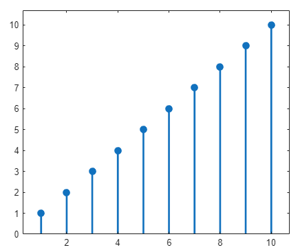
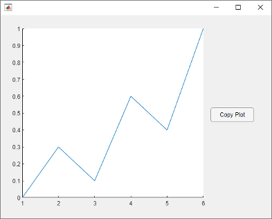
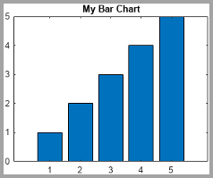
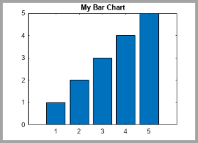
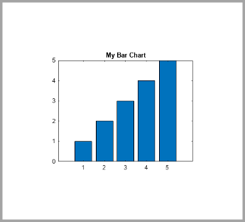
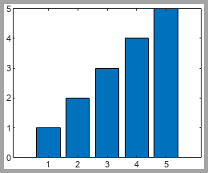
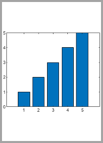

copygraphics
Copy plot or graphics content to clipboard
Description
copygraphics( copies the content of the
graphics object specified by obj)obj to the system clipboard. The graphics
object can be any type of axes, a figure, a standalone visualization, a tiled chart layout,
or a container within a figure. The clipboard content is available for pasting into other
applications and documents.
copygraphics(
specifies additional options for copying the content to the clipboard. For example,
obj,Name,Value)copygraphics(gca,Resolution=300) copies the contents of the current
axes to the clipboard as a 300-DPI image.
Examples
Create a line plot and get the current axes. Then copy the contents of the axes to the clipboard.
plot(rand(5,5)) ax = gca; copygraphics(ax)

Display an image and get the current axes. Then copy the contents of the axes as a 300-DPI image.
I = imread('peppers.png'); imshow(I) ax = gca; copygraphics(ax,'Resolution',300)

Since R2025a
If you want to specify the width and height for your copied content, create a figure that has a similar size and aspect ratio. For example, create a stem plot in a figure that is 500-by-400 pixels in size. Then copy the axes as an image that is 500-by-400 pixels size, including 10 pixels of padding on each side.
f = figure; f.Position(3:4) = [500 400]; stem(1:10,"filled",LineWidth=2) ylim padded ax = gca; copygraphics(ax,Units="pixels",Width=500,Height=400, ... ContentType="image",Padding=10)

Display a plot with an annotation that extends beyond the bounds of the axes. Then copy the contents of the figure.
plot(1:10) annotation('textarrow',[0.06 0.5],[0.73 0.5],'String','y = x ') f = gcf; copygraphics(f)

Display a bar chart and get the current axes. Then copy the contents of the axes as a vector graphic.
bar([10 22 31 43]) ax = gca; copygraphics(ax,'ContentType','vector')

Display two plots in a tiled chart layout. Then copy both plots to the clipboard by passing the TiledChartLayout object to the copygraphics function.
t = tiledlayout(2,1); nexttile plot([1 2 3]) nexttile plot([3 2 1]) copygraphics(t)

If you want to copy just one of the plots, call the nexttile function with the axes return argument. Then pass the axes to the copygraphics function.
Display a heatmap chart. Then copy the chart as a vector graphic and specify a transparent background.
h = heatmap(rand(10,10)); copygraphics(h,'ContentType','vector','BackgroundColor','none')

Create a program file called copyapp.m that displays a plot and a
button for copying the axes content to the clipboard. In the callback function for the
button, call the copygraphics function.
function copyapp f = uifigure; ax = uiaxes(f,'Position',[25 25 400 375]); plot(ax,[0 0.3 0.1 0.6 0.4 1]) b = uibutton(f,'Position',[435 200 90 30],'Text','Copy Plot'); b.ButtonPushedFcn = @buttoncallback; function buttoncallback(~,~) copygraphics(ax) end end
Run the app by calling the copyapp function. When you click the
Copy Plot button, the axes content is copied to the clipboard.
The area surrounding the axes, including the button, is not copied.
copyapp

Input Arguments
Name-Value Arguments
Specify optional pairs of arguments as
Name1=Value1,...,NameN=ValueN, where Name is
the argument name and Value is the corresponding value.
Name-value arguments must appear after other arguments, but the order of the
pairs does not matter.
Example: copygraphics(gca,Resolution=300) copies the contents of the
current axes as 300-DPI image.
Background color, specified as "current",
"none", an RGB triplet, a hexadecimal color code, or a color
name. The background color controls the color of the margin that surrounds the axes or chart.
A value of
"current"sets the background color according to the parent container's color. If you explicitly set the color of the parent container by setting a property—for example, by creating a red figure usingfigure(Color="red")—then the copied graphic uses that color.If you do not set the color of the parent container, then the background color of the copied graphic depends on the theme. For the light theme, the background is white. For the dark theme, the background is dark gray, almost black. (since R2025a)
A value of
"none"sets the background color to transparent, white, or dark gray (almost black), depending on the value ofContentType:If
ContentType="vector", the background color is transparent.If
ContentType="image", the background color is white for light-themed figures and dark gray (almost black) for dark-themed figures.If
ContentType="auto", MATLAB sets the background color according to the heuristic it uses to determine the type content to copy.
Alternatively, specify a custom color or a named color.
Custom Colors and Named Colors
RGB triplets and hexadecimal color codes are useful for specifying custom colors.
An RGB triplet is a three-element row vector whose elements specify the intensities of the red, green, and blue components of the color. The intensities must be in the range
[0,1]; for example,[0.4 0.6 0.7].A hexadecimal color code is a character vector or a string scalar that starts with a hash symbol (
#) followed by three or six hexadecimal digits, which can range from0toF. The values are not case sensitive. Thus, the color codes"#FF8800","#ff8800","#F80", and"#f80"are equivalent.
Alternatively, you can specify some common colors by name. This table lists the named color options, the equivalent RGB triplets, and hexadecimal color codes.
| Color Name | Short Name | RGB Triplet | Hexadecimal Color Code | Appearance |
|---|---|---|---|---|
"red" | "r" | [1 0 0] | "#FF0000" |
|
"green" | "g" | [0 1 0] | "#00FF00" |
|
"blue" | "b" | [0 0 1] | "#0000FF" |
|
"cyan"
| "c" | [0 1 1] | "#00FFFF" |
|
"magenta" | "m" | [1 0 1] | "#FF00FF" |
|
"yellow" | "y" | [1 1 0] | "#FFFF00" |
|
"black" | "k" | [0 0 0] | "#000000" |
|
"white" | "w" | [1 1 1] | "#FFFFFF" |
|
This table lists the default color palettes for plots in the light and dark themes.
| Palette | Palette Colors |
|---|---|
Before R2025a: Most plots use these colors by default. |
|
|
|
You can get the RGB triplets and hexadecimal color codes for these palettes using the orderedcolors and rgb2hex functions. For example, get the RGB triplets for the "gem" palette and convert them to hexadecimal color codes.
RGB = orderedcolors("gem");
H = rgb2hex(RGB);Before R2023b: Get the RGB triplets using RGB =
get(groot,"FactoryAxesColorOrder").
Before R2024a: Get the hexadecimal color codes using H =
compose("#%02X%02X%02X",round(RGB*255)).
Colorspace of the copied graphic, specified as "rgb" or
"gray".
"rgb"— Copy truecolor RGB content."gray"— Convert the content to grayscale.
Since R2025a
Width of the copied graphic, specified as "auto" or a positive
number. To specify a custom width, specify a number. By default, the units are pixels
for images and points for vector graphics. You can specify different units by using
the Units name-value argument. All width values include any
padding around the perimeter of the graphic. The copied graphic contains a small
margin of padding by default, but you can change it by specifying the
Padding name-value argument.
A Width value of "auto" selects a width
that preserves the aspect ratio based on the Height value.
Note
If you specify
Widthas a number, you must also specifyContentTypeas either"image"or"vector".If you copy content as pixels, the default
Width("auto") depends on theResolutionname-value argument, which is150by default. To use the default width and match the on-screen size more closely, specify theResolutionname-value argument as the value returned byget(groot,"ScreenPixelsPerInch"). For example:sppi = get(groot,"ScreenPixelsPerInch"); copygraphics(gca,Resolution=sppi)
Since R2025a
Height of the copied graphic, specified as "auto" or a positive
number. To specify a custom height, specify a number. By default, the units are pixels
for images and points for vector graphics. You can specify different units by using
the Units name-value argument. All height values include any
padding around the perimeter of the graphic. The copied graphic contains a small
margin of padding by default, but you can change it by specifying the
Padding name-value argument.
A Height value of "auto" selects a height
that preserves the aspect ratio based on the Width value.
Note
If you specify
Heightas a number, you must also specifyContentTypeas either"image"or"vector".If you copy content as pixels, the default
Height("auto") depends on theResolutionname-value argument, which is150by default. To use the default height and match the on-screen size more closely, specify theResolutionname-value argument as the value returned byget(groot,"ScreenPixelsPerInch"). For example:sppi = get(groot,"ScreenPixelsPerInch"); copygraphics(gca,Resolution=sppi)
Since R2025a
Padding around the copied graphic, specified as one of the values in this table.
| Value | Description | Example |
|---|---|---|
| Include enough padding to include x- and y-axes labels, a title, and decorations such as legends and colorbars. | Create a bar chart and copy it as an image with
The gray border around the image outlines the captured region. The border is not part of the copied image.
bar(1:5)
title("My Bar Chart")
ax = gca;
copygraphics(ax)

|
| Include the same relative amount of padding as shown in the figure window. | Create a bar chart and copy it as an image with
The gray border around the image outlines the captured region.
bar(1:5) title("My Bar Chart") ax = gca; copygraphics(ax,Padding="figure")

|
Positive number | Include the specified amount of padding. If you specify a numeric
value for | Create a bar chart and copy it as an image with 100 pixels of padding. The gray border around the image outlines the captured region.
bar(1:5) title("My Bar Chart") ax = gca; copygraphics(ax,ContentType="image",Padding=100)

|
Since R2025a
Units for the Width, Height, and
Padding values, specified as "auto",
"pixels" (for images only), "inches",
"centimeters", or "points" (where 1 point =
1/72 inch).
The default value of "auto" sets the units to
"pixels" for images and "points" for vector
graphics.
Note
If you specify a value for Width,
Height, or Padding, you must also
specify ContentType as either "image" or
"vector".
Since R2025a
Preserve original aspect ratio, specified as "auto",
"on", or "off".
A value of "auto" enables copygraphics to
choose either "on" or "off", depending on
whether you specify the Width and Height
name-value arguments and whether the combination changes the aspect ratio.
copygraphics preserves the original aspect ratio if you specify
the Width or Height name-value argument (but not
both). It does not preserve the original aspect ratio if you specify values for both
dimensions and those values change the aspect ratio.
This table summarizes the behavior of the "on" and
"off" values.
| Value | Description | Example |
|---|---|---|
| Preserve the aspect ratio of the original graphic.
| Create a bar chart. Then copy the chart as an image. Specify only
the The gray border around the image outlines the captured region. The border is not part of the copied image.
bar(1:5) ax = gca; copygraphics(ax,Width=250,ContentType="image", ... PreserveAspectRatio="on")

Copy the chart as an image with
copygraphics(ax,Width=250,ContentType="image", ... Height=350,PreserveAspectRatio="on")

|
| Do not preserve the original aspect ratio. If the
| Create a bar chart. Then copy the chart as an image with
The image shows a stretched version of the chart. The gray border around the image outlines the captured region.
bar(1:5) ax = gca; copygraphics(ax,Width=250,Height=350, ... ContentType="image",PreserveAspectRatio="off")
|

Limitations
MATLAB Web App Server™ does not support
copygraphics.MATLAB Online™ supports copying images (pixels) only. Vector graphics are not supported. (since R2024b)
Alternative Functionality
Use the Figure Toolstrip (since R2025a)
In the Figure tab, click Copy Figure. For more information, see Copy Figure to Clipboard.
Use the Axes Toolbar
Place your cursor over the Export button  in the axes toolbar to reveal a drop-down menu with options
for exporting content:
in the axes toolbar to reveal a drop-down menu with options
for exporting content:
 : Save the content as a tightly cropped image or
PDF.
: Save the content as a tightly cropped image or
PDF. : Copy the content as an image.
: Copy the content as an image. : Copy the content as a vector graphic.
: Copy the content as a vector graphic.